Modeling Diffusion and Motion in Cells
at the Molecular Level
Wendell Smith
Outline
The Dynamics of α-Synuclein and Disordered Proteins
Can we model a disordered protein without biasing it towards folding?
Can we use this model to understand their dynamics?
Dynamics near the Glass Transition
What are the significant factors in dynamics in the bacterial cytoplasm?
Nucleoid effects, activity, crowding
Chapter 1. The Dynamics of α-Synuclein
Can we model a disordered protein without biasing it towards folding?
α-Synuclein
| |
Previous Work
| |
Previous Work
 CHARMM Force Field at 523 K with NMR constraints! |
All-Atom Models are calibrated for folded proteins, and are biased toward folding.
Can we simulate an IDP with a simple model
and arrive at realistic results?
1.2 Methods
Molecular Dynamics Simulations
Start with particles at some positions \(\vec{r}_i\), with velocities \(\vec{v}_i\)
Calculate the forces on each particle, \(\vec{f}_i\)
Integrate numerically:
\[\begin{align*} \vec{r}_{i}(t + \delta t) & =\vec{r}_{i}(t) + \delta t\,\vec{v}_{i}(t) \\ \vec{v}_{i}(t + \delta t) & =\vec{v}_{i}(t) + \delta t\,\frac{1}{m_{i}}\vec{f}_{i}(t) \end{align*}\]Repeat Step 3 for 3×10¹¹ times or so, and this follows Newton’s equations:
\[\begin{align*} \frac{d \vec{r}_{i}}{dt} & = \vec{v}_{i} \\ \frac{d \vec{v}_{i}}{dt} & = \frac{1}{m_{i}}\vec{f}_{i}(t) \end{align*}\]
Molecular Dynamics Simulations
Velocity Verlet for time reversibility and better energy conservation
We integrated the Langevin equation, to simulate an implicit solvent:
\[\frac{d\vec{v}_{i}}{dt}=-\frac{1}{m_{i}}\vec{\nabla}U-\gamma \vec{v}_{i}+\sqrt{\frac{2\gamma k_{B}T}{m_i}}\Gamma\left(t\right)\]Neighbor lists increase performance
Building a Model
All-Atom | United-Atom | Coarse-Grained |
 |
All-Atom and United-Atom Geometry
| 2 Carbon atoms with centers at a distance \(r_{ij}\) from each other
\[
V_{ij}^{r}=\begin{cases}
4\epsilon_{r}\left[ \left( \frac{ \sigma^{r}}{r_{ij}} \right)^{12} - \left(\frac{\sigma^{r}}{r_{ij}} \right)^{6}\right] + \epsilon_{r} & r_{ij} < 2^{1/6} \sigma^{r}\\
0 & r_{ij} > 2^{1/6} \sigma^{r}
\end{cases}
\]
|
All-Atom Geometry
All-Atom | PDB Structures |
 |
Zhou et al. [2] provided atom sizes calibrated to a hard sphere model
United-Atom Geometry
United-Atom | PDB Structures |
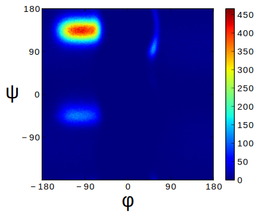 | |
Richards et al. [3] provided atom sizes calibrated to calculate packing densities; we multiplied by 0.9
Coarse-Grained Model Geometry
| |
Electrostatics
\[V_{ij}^{\textrm{es}}=\frac{1}{4\pi\epsilon_{0}\epsilon}\frac{q_{i}q_{j}}{r_{ij}}e^{ - \frac{r_{ij}}{\ell}}\]
|  Screened Coulomb Potential |
Hydrophobicity
\[V_{ij}^{a}=\begin{cases}
-\epsilon_{a}\lambda_{ij} & R_{ij}>2^{1/6}\sigma^{a}\\
4\epsilon_{a}\lambda_{ij}\left[\left(\frac{\sigma^{a}}{R_{ij}}\right)^{12}-\left(\frac{\sigma^{a}}{R_{ij}}\right)^{6}\right] & R_{ij}<2^{1/6}\sigma^{a}
\end{cases}\]
|  Hydrophobicity Potential |
Full Model
1.3 Results for α-Synuclein
Radius of Gyration (\(R_{g}\))
 |
|
\[\alpha=\frac{\textrm{Hydrophobicity Strength}}{\textrm{Electrostatic Strength}}\] |
smFRET
Single-Molecule Förster Resonance Energy Transfer

smFRET of α-synuclein
 |  |  |  |
 |  |  | |
 |  |  |  |
smFRET Comparison (United-Atom)
| |
\[ET_{\textrm{eff}}=\left\langle \frac{1}{1+\left(\frac{R_{ij}}{R_{0}}\right)^{6}}\right\rangle\] |
smFRET Comparison (Coarse-Grained)
| |
\[ET_{\textrm{eff}}=\left\langle \frac{1}{1+\left(\frac{R_{ij}}{R_{0}}\right)^{6}}\right\rangle\] |
smFRET Comparison
United-Atom | Coarse-Grained |
|
|
|
Comparison to Constrained Simulations
  | ◼ Red Squares: Our simulation ▲ Blue Triangles: Constrained simulation ◼ Closed: Constrained pairs ◻ Open: Unconstrained pairs |
Conclusion
We can use a simple, 5-term model to study the conformational dynamics of α-synuclein calibrated to experiments
This model accurately predicts experimental results
The structure of α-synuclein is intermediate between a random walk and a collapsed globule
Chapter 2. Disordered Proteins
Can we extend this model to other disordered proteins, and use it to understand their dynamics?
Disordered Proteins
Charge vs. Hydrophobicity | |
 | ● Green Circles: Known IDPs ◻ Purple Squares: Folded Proteins |
Absolute value of the electric charge per residue Q versus the hydrophobicity per residue H |
Uversky et al. [4] showed that charge and hydrophobicity were predictors of disordered proteins
They drew a line at \(Q=2.785H-1.151\)
Hydrophobicity Scales
 |
|
Hydrophobicity per Residue |
smFRET Comparisons
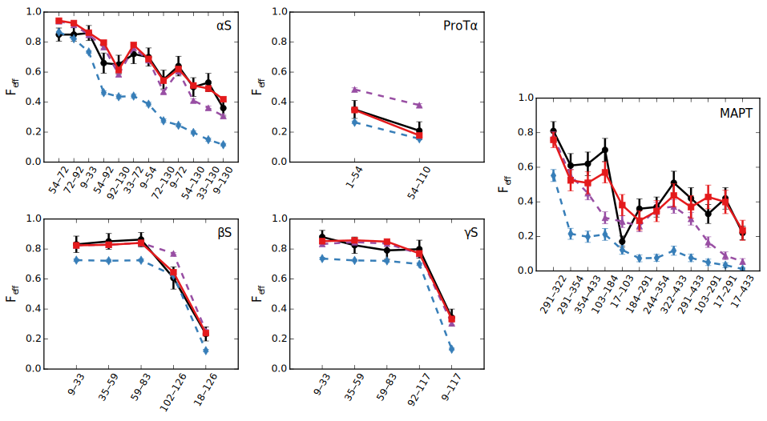 | |
|
|
Hydrophobicity Models
 | ||||
Mixing Rule -1 Arithmetic mean \(h_{ij}=\frac{h_{i}+h_{j}}{2}\) -2 Geometric mean \(h_{ij}=\sqrt{h_{i} h_{j}}\) -3 Maximum \(h_{ij}=\max(h_{i},h_{j})\) | Protein Red: αS Blue: βS Green: γS Purple: ProTα Orange: MAPT | |||
Radius of Gyration (\(R_g\))
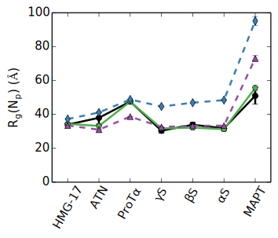 |
|
Radius of Gyration (\(R_g\)) Scaling
 | |
Radius of gyration of 5 proteins | Scaling of partial \(R_g\) with chemical distance |
Radius of Gyration Scaling
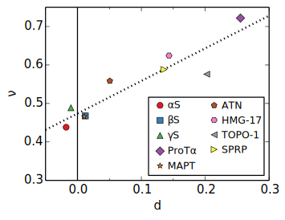 | |
Scaling exponent ν with distance d from charge-hydrophobicity line | Scaling of partial \(R_g\) with chemical distance |
Conclusion
Hydrophobicity strongly affects the dynamics of disordered proteins
the specific scale used has little effect
This model can describe several disordered proteins
We can use the hydrophobicity and charge of residues to predict the overall dynamics of IDPs
Chapter 3. Dynamics near the Glass Transition
What are the significant factors in dynamics in the bacterial cytoplasm?
Many possibilities, we’ll look at 3
Nucleoid: The tightly packed DNA in the center of the cell
Activity: Direct metabolic effects
Caging: crowding and "gridlock"
Polydispersity: particles of very different sizes
Dynamics in Cells
Cells are full of large molecules, which may have an effect on particle dynamics
These macromolecules may take up anywhere from 5% to 40% of volume
Including bound water, these estimates could go as high as 50% to 60%, well into the glass transition region for hard spheres
Sub-diffusive and non-Gaussian behavior has been observed in particle motions in the cytoplasm
Dynamics in Cells
Diffusion of GFP-μNS particles in the cytoplasm of Escherichea Coli | |
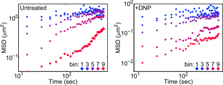 | |
Wild-type | Inactive metabolism |
Colors represent particle size | |
3.2 Nucleoid Effects
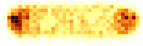 60 nm diameter |
|
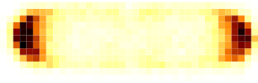 95 nm diameter | |
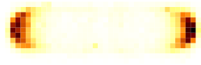 150 nm diameter |
Models
Hard Nucleoid | |
 | Model the nucleoid as an excluded volume region, which particles can go around |
Soft Nucleoid | |
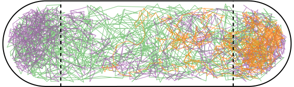 | Derive a potential along the x-axis to "push" particles out of the nucleoid |
Models
| Hard Nucleoid | Soft Nucleoid |
|---|---|
| |
Model the nucleoid as an excluded volume region, which particles can go around | Derive a potential along the x-axis to "push" particles out of the nucleoid |
Soft Nucleoid Model
 |  |
Hard Nucleoid Results
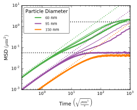 |
|
The hard nucleoid was modeled with a length of 2 μm and a radius of 0.7 μm (thin lines), 0.75 μm (medium lines), and 0.8 μm (thick lines).
Soft Nucleoid Results
 |
|
Conclusions
The hard nucleoid model is very sensitive to particle size, and went from trapped to diffusive
The soft nucleoid showed little sensitivity to particle size, with minimal sub-diffusive behavior
A better model for the data shown earlier may require some combination of the two
3.3 Activity in the Cell Cytoplasm
Metabolic activity shows a strong effect on cellular dynamics
Is this a direct effect due to the chemical activity in the cytoplasm, or a secondary effect, e.g. increasing the crowding in the cell?
Wild-type | Inactive metabolism |
Colors represent particle size | |
Previous Work
Activity: “the ability of individual units to move actively by gaining kinetic energy from the environment”
Applied to flocking and herding of animals, swimming microorganisms, Janus particles [7], etc.

Janus Particle Trajectories in varying concentrations of H2O2
Cellular Constraints in Bacteria
Events are stochastic and undirected
Energies for single events likely do not exceed that of ATP, \(20 k_B T\)
Events are no more rapid than metabolism, and do not increase cell temperature
Simulations
|
Simulations
Without Activity | With Activity |
Results
|
Conclusion
Activity can only increase diffusion if it is directed, continuous, or at physiologically unfeasible frequencies or energies
3.4 Caging
How does crowding of purely exclusive-volume affect dynamics?
Glassy Dynamics
| 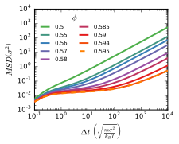 |
Cooperative Relaxation Model
 | |
| |
Evidence for Caging
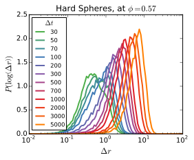 |  |
Dynamical Heterogeneities
\(\alpha_2\) for \(N=100\) | Maximal \(\alpha_2\) for various \(N\) |
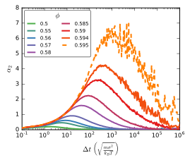 | 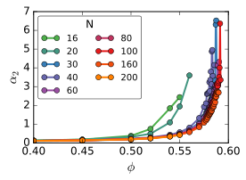 |
A common measure for dynamical heterogeneities is \(\alpha_2\):
\[\alpha_{2}\left(\Delta t\right)=\frac{3\left\langle \Delta r\left(\Delta t\right)^{4}\right\rangle }{5\left\langle \Delta r\left(\Delta t\right)^{2}\right\rangle ^{2}}-1\]
Unrelaxed simulations are shown with dotted lines.
Conclusions
Some evidence for the cooperative relaxation model can be seen in the distribution of step sizes for hard spheres
Large values of \(\alpha_2\) are not limited to attractive interactions, and can be seen in hard spheres at high densities
Summary
The dynamics of disordered proteins can be accurately modeled with a simple 5-term potential calibrated to experimental data
The complicated dynamics inside cells observed in experiments may be linked to the presence of the nucleoid, polydispersity, and crowding (caging) behavior, but active matter is an unlikely candidate
Acknowledgments
Corey, Mark, and the O’Hern Lab
Our collaborators from the Rhoades lab and the Jacobs-Wagner lab
The many great teachers I have had
My family and my wife
Bibliography
T. Mittag and J. D. Forman-Kay, Current Opinion In Structural Biology 17, 3 (2007).
A. Q. Zhou, C. S. O’Hern, and L. Regan, Biophysical Journal 102, 2345 (2012).
V. N. Uversky, J. R. Gillespie, and A. L. Fink, Proteins: Structure, Function, And Bioinformatics 41, 415 (2000).
J. Kyte and R. F. Doolittle, Journal Of Molecular Biology 157, 105 (1982).
O. D. Monera, T. J. Sereda, N. E. Zhou, C. M. Kay, and R. S. Hodges, Journal Of Peptide Science 1, 319 (1995).
J. R. Howse, R. A. L. Jones, A. J. Ryan, T. Gough, R. Vafabakhsh, and R. Golestanian, Physical Review Letters 99, 048102 (2007).